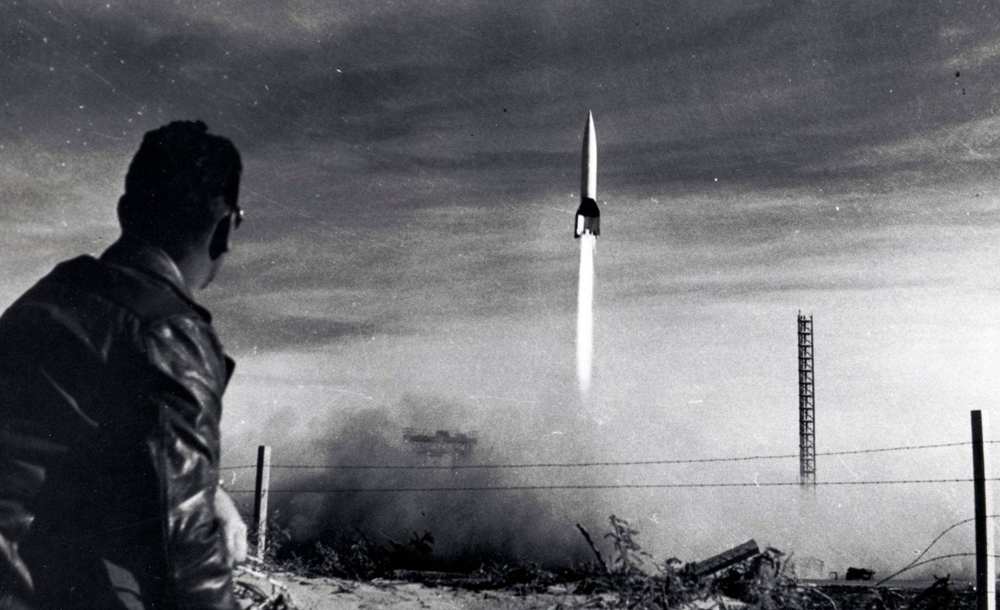
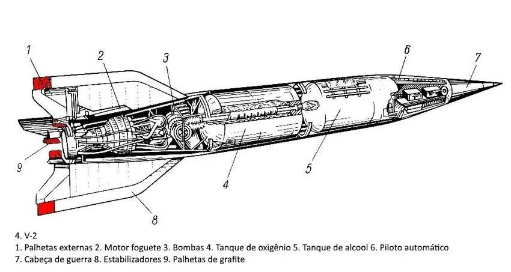
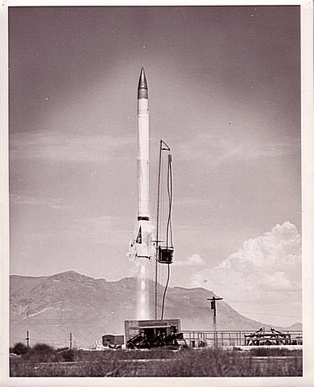
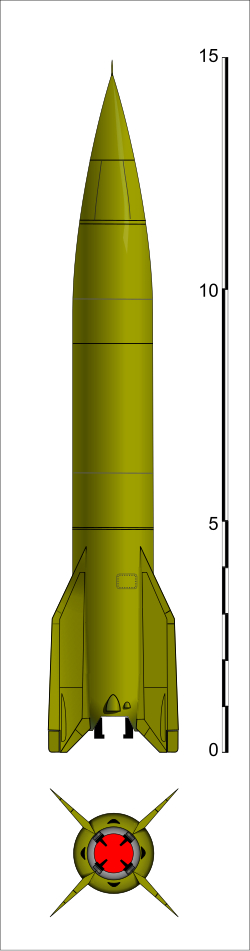
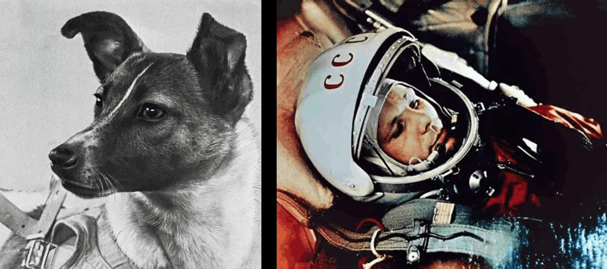
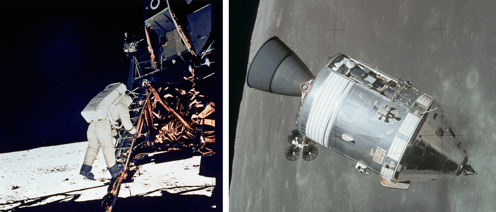
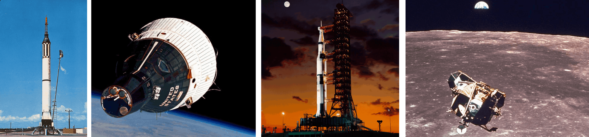

As viagens interestelares são naves espaciais que viajam de uma estrela para outra no universo, que poderiam auxiliar na descoberta de planetas que podem abrigar formas de vida.
Essas viagens também nos ajudariam a aprender mais sobre novas estrelas, planetas e sistemas solares, podendo eventualmente ser utilizadas pela humanidade para colonizar um novo sistema solar.
O tipo de tecnologia necessária para tornar possível isso é imprescindível, um dos fatores mais cruciais para considerar são as grandes distâncias e o tempo que essas viagens demorariam. Uma melhoria na tecnologia de propulsão pode resolver a questão do longo período de duração dessas viagens.
No futuro, há uma probabildade que robôs e sondas serão utilizados primeiro antes de colocarmos seres humanos em perigo, portanto, as viagens interestelares aumentarão imensamente nossos horizontes, levando-nos a conhecer o universo muito melhor do que nunca.
COMEÇO DA EXPLORAÇÃO ESPACIAL
I. FIM DA SEGUNDA GUERRA MUNDIAL

Alemanha é derrotada
◆︎ Após o fim da Segunda Guerra Mundial, os territórios que pertenciam à Alemanha nazista foram divididos entre os Estados Unidos e seus aliados, e a União Soviética.
A ocupação do país fez com que os dois vencedores descobrissem várias armas tecnológicas avançadas feitas pelos nazistas, que foram abandonadas após sua derrota, uma delas sendo o revolucionário
V-2 (Vergeltungswaffe 2), ou a Arma de Vingança 2, que funcionava com um combustível composto de etanol e oxigênio liquido. Testes do foguete feitos pelas duas nações fizeram com que o foguete
atingisse uma altitude de 175 km, sendo o primeiro objeto feito por humanos que ultrapassou a Linha de Kármán e chegou ao espaço, mas não conseguindo atingir órbita.

Com as plantas da avançada técnologia nazista, ambos os países começaram a fazer seus próprios designs inspirados pelo V2, com intenções de superar uns aos outros
em técnologia espacial, que também era afetada pelo desenvolvimento de mísseis intercontinentais, que seria crucial para a Corrida Espacial. durante a década de 40 á 50, os
Estados Unidos desenvolveram o foguete de sondagem Viking, fornecendo dados científicos valiosos das fronteiras do espaço entre 1949 e 1955, enquanto os Soviéticos desenvolveram
o R-1, um míssil ballístico tático, sendo baseado pelo modelo do foguete alemão, Ele nunca foi uma arma estratégica eficaz. No entanto, a produção e o lançamento do R-1 proporcionaram aos
soviéticos uma experiência valiosa que, mais tarde, permitiu à URSS construir seus próprios foguetes, muito mais capazes.


II. SPUTNIK E DOMINÂNCIA SOVIÉTICA
Foguete Sputnik, responsável por lançar o primeiro satélite ao espaço de mesmo nome.
Russos tomam a Liderança
No dia 4 de outubro de 1957, a União Soviética, modificando um de seus mísseis intercontinentais R-7 Semyorka para seu programa espacial, fez o lançamento do primeiro satélite
artificial a atingir órbita, o Sputnik-1 (ou Satélite-1 em russo). Era uma esfera de metal polido com quatro antenas de rádio externas para transmitir pulsos de rádio.
Com esse primeiro pulo, os soviéticos conseguiram chegar um passo adiante dos estadunidenses, conseguindo colocar o primeiro animal no espaço com a Laika na missão Sputnik 2 e, por fim, em 1961,
O primeiro humano no espaço, com a missão Vostok-1 tripulada por Yuri Gagarin.

Laika, primeiro animal a chegar ao espaço, e Yuri Gagarin, primeiro humano a entrar em órbita.
III. AMÉRICA RETOMA O PÓDIO

De esquerda á direita: Astronauta Buzz Aldrin coloca os pés na superfice lunar durante a missão Apollo 11; Command and Support Module do programa Apollo, responsável por trazer os astronautas á Lua.
Com todos os avanços significativos feitos pelos russos, os Estados Unidos, liderados por John F. Kennedy, começaram seus próprios avanços espaciais, motivados
Pelo governo, começando com foguetes simples e robóticos, e, ao passar dos anos, a tecnologia americana avançou significativamente, conseguindo colocar o primeiro americano, Alan Shepard, em órbita na missão
Mercury-Redstone 3, os americanos conseguiram ainda mais avanços com o Programa Gemini, que envisionava mais voos ao espaço e até acoplamentos entre naves em órbita, com o programa sendo bem-sucedido, dando
aos Estados Unidos, experiência valiosa que iria definir seu impacto na história. Entre 1961 e 1969, o Programa Apollo levou os primeiros humanos à órbita dentro do foguete Saturn V,
na missão Apollo 7 em 1968.
Os primeiros humanos a chegar à Lua em 1969 com a Apollo 8, e finalmente, os primeiros humanos a pousar na Lua em 1969, Neil Armstrong e Buzz Aldrin.
Galeria:

De esquerda á direita: Foguete Mercury-Redstone, batizado Freedom 7 por Alan Shepard, Capsula Gemini e seu tanque de propelente em órbita, foguete Saturn V, o Lunar Module descendo até o solo lunar durante a missão Apollo 11